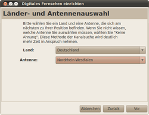
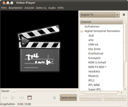

DVB
Archivierte Anleitung
Dieser Artikel wurde archiviert, da er - oder Teile daraus - nur noch unter einer älteren Ubuntu-Version nutzbar ist. Diese Anleitung wird vom Wiki-Team weder auf Richtigkeit überprüft noch anderweitig gepflegt. Zusätzlich wurde der Artikel für weitere Änderungen gesperrt.
Zum Verständnis dieses Artikels sind folgende Seiten hilfreich:
Prinzipiell lässt sich mit dem Medienplayer Totem digitales Fernsehen anzeigen. Weitere Programme, die (Digital-)Fernsehen anzeigen können, sind im Artikel TV aufgeführt.
Installation¶
Ubuntu 12.04¶
Zuerst muss man das "Personal Package Archiv" (PPA) der GNOME-DVB-Daemon-Entwickler einbinden, das für 12.04 eine aktuellere Version der benötigten Programme und Bibliotheken bereit stellt.
Adresszeile zum Hinzufügen des PPAs:
ppa:gnome-dvb-daemon/ppa
Hinweis!
Zusätzliche Fremdquellen können das System gefährden.
Ein PPA unterstützt nicht zwangsläufig alle Ubuntu-Versionen. Weitere Informationen sind der  PPA-Beschreibung des Eigentümers/Teams gnome-dvb-daemon zu entnehmen.
PPA-Beschreibung des Eigentümers/Teams gnome-dvb-daemon zu entnehmen.
Damit Pakete aus dem PPA genutzt werden können, müssen die Paketquellen neu eingelesen werden.
Nach dem Aktualisieren der Paketquellen kann das folgende Paket installiert werden [1]:
totem-plugins-dvb-daemon (ppa)
 mit apturl
mit apturl
Paketliste zum Kopieren:
sudo apt-get install totem-plugins-dvb-daemon
sudo aptitude install totem-plugins-dvb-daemon
|  |
| Sendersuchlauf |
|  |
| Senderliste |
Einrichtung¶
Sendersuche¶
Wenn man eine von Ubuntu unterstützte DVB-T-Karte bzw. Stick hat, so muss nun zuerst eine Liste der empfangbaren Sender angelegt werden. Dazu wählt man den Menüpunkt "Film -> Fernsehen", unter Ubuntu 12.04 unter Bearbeiten -> Einstellungen für Digitales Fernsehen" . In den folgenden Dialogen wählt man zuerst das Land aus und dann den Standort / Bundesland. Anschließend startet ein automatischer Sendersuchlauf. Dieser kann unter Umständen länger dauern, gerade wenn man sich in einem Gebiet mit schwachem Empfang befindet. Die erstellte Liste wird an einem beliebigen Ort gespeichert; z.B ~/.totem/channels.conf
Hinweis:
Bei der Auswahl des Bundeslandes kann es je nach Wohnort sinnvoll sein, ein angrenzendes Bundesland zu wählen, sofern dort ein stärkerer Sendemast steht. Dies gilt insbesondere dann, wenn man in der Nähe einer Grenze wohnt.
Digital Fernsehen Kontrollzentrum¶
Im Hauptmenü findet sich der Punkt "Anwendungen -> Multimedia -> Digital Fernsehen Kontrollzentrum". Dort lassen sich sowohl Fernsehkarten konfigurieren, als auch die Aufnahmen programmieren, ohne dass Totem laufen muss.
Nutzung¶
Ist der Sendersuchlauf abgeschlossen, kann man in der Seitenleiste den Punkt "Digitales Fernsehen -> digital terrestrial Fernsehen" öffnen. Die Sender können durch  anklicken gewechselt werden.
anklicken gewechselt werden.
Hinweis:
Unter Ubuntu 12.04 funktioniert das direkte Wiedergeben momentan (Dezember 2012) aus ungeklärter Ursache leider nicht; Aufnahmen sind ist aber möglich.
Die Schaltflächen "Programmführer" (EPG) und "Was läuft gerade" informieren über das aktuelle Fernsehprogramm.
Hinweis:
Der Senderwechsel bei DVB-T kann bis zu 10 Sekunden dauern!
Aufnahmen programmieren¶
Aufnahmen lassen sich recht einfach über den "Programmführer" festlegen, der über den markierten Sender in der Senderliste abrufbar ist. Ein einfacher -Klick zeigt genauere Informationen zu den Sendungen, ein Doppel--Klick öffnet einen Dialog, in dem die Sendung auf die Liste der geplanten Aufnahmen gesetzt werden kann. Der Rechner muss zum Aufnahmezeitpunkt allerdings laufen! Gegebenenfalls werden nicht alle Sendungen im EPG angezeigt, sodass auf "manuelle" Einstellung zurückgegriffen werden muss.
Die Aufnahme wird standardmäßig fünf Minuten vor Sendungsbeginn gestartet, und endet 5 Minuten nach Ende der vorgesehenen Sendezeit. Unter "Bearbeiten -> Geplante Aufnahmen" lassen sich die Werte ändern, versehentlich angegebenen Aufnahmezeiten löschen, oder auch manuell Aufnahmedaten eingeben. Die Aufzeichnungen werden standardmäßig im Verzeichnis ~/Videos/Recordings/[Sendername]/[Aufnahmedatum-Zeit]/ als 001.mpeg abgelegt. Die Aufnahmen werden in der Seitenleiste bei der Auswahl "Digitales Fernsehen" unter "Aufnahmen" unter dem eigentlichen Titel (ohne weitere Angaben) aufgeführt. Ein " -> Eigenschaften" öffnet dann ein Fenster mit näheren Information (Datum, Inhalt der Angaben aus dem Programmführer).
-> Eigenschaften" öffnet dann ein Fenster mit näheren Information (Datum, Inhalt der Angaben aus dem Programmführer).
Bei "überlappenden" Zeiten (wenn also z.B. nacheinander folgende Sendungen aufgezeichnet werden sollen) müssen ggf. die Anfangs- bzw. Endzeiten entsprechend angepasst werden. Das Programm warnt, wenn die Zeiten verschiedener Sendungen nicht passen. Aufeinanderfolgende Aufnahmen eines Senders werden allerdings jeweils mit Vorlauf und "Nachspann" gespeichert, die "überlappenden" Zeiten werden "doppelt" für beide Aufnahmen verwendet.
Die Aufnahmen können auch im Hintergrund erfolgen, ohne das Totem dazu laufen muss. Theoretisch kann bei Verwendung zweier Karten auch parallel ein andere Sender angeschaut werden.
Links¶
Totem
 Hauptseite
HauptseiteDVB Daemon
 Projektseite, inkl. Installationshinweisen
Projektseite, inkl. Installationshinweisengnome-dvb-daemon auf Launchpad
- PPA des Projektes
- Erstellt mit Inyoka
-
 2004 – 2017 ubuntuusers.de • Einige Rechte vorbehalten
2004 – 2017 ubuntuusers.de • Einige Rechte vorbehalten
Lizenz • Kontakt • Datenschutz • Impressum • Serverstatus -
Serverhousing gespendet von